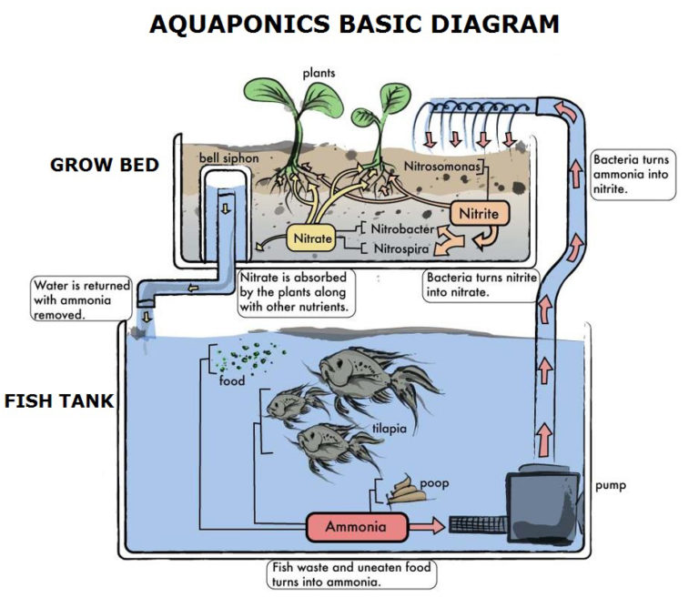

Our project idea is to develop an affordable, scalable aquaponics monitoring and automation solution for back yard hobbyists. Large scale automated systems exist for commercial aqua farming but the cost of these solutions make them unviable for the backyard farmer. Conversely, ‘do it yourself’ style projects for monitoring and automating home aquariums also exist, typically using a Raspberry Pi or Arduino board and other consumer electronics to measure different environment factors and present this information on web-based dashboard. We intend to expand on this idea, targeting environment variables that are core to combining aqua culture and hydroponics, either in a single back yard system or for multiple units on a larger property.
Two of the biggest issues in the world today are food security and climate change. Both these issues are significantly related. As land is cleared for farming, the balance of nature is upset. Crops of plants absorb significantly less carbon dioxide from the atmosphere than the forests that preceded them. Additionally, rainfall is effected by the clearing of forests, resulting in extended droughts in some areas. Traditional plant farming requires lots of water, with additional chemicals used for various reasons, this water tends to run off into local river systems along with trace chemicals causing further issues.
As our population increases more food is required, further increasing the need for farming and agriculture. Aquaponics is a resource efficient method of growing food, requiring less water than traditional farming, and the symbiotic relationship between the plants and fish results in less chemical additions, such as is the case with separate hydroponics and aquaculture methods.
We hope that this project will allow enthusiasts an easy way to understand what is going on with their backyard hobby aquaponics and maybe in time become a viable solution for more people to get into commercial aquaculture, further promoting sustainable farming methods.
For Proof of concept, a home-made flood and drain aquaponics system will be used as the 'test subject'. Diagram A show the basic concept of how this works. Fish are grown in a fish tank, with their waste turning into ammonia as a by-product. water is continually being pumped into the grow bed, which is typically above the fish tank, or at least higher. The grow bed is filled with a hydroponics medium such as clay balls, which acts as a biological filter for the fish tank. The ammonia in the water is converted to nitrites and then nitrates as in a typical fish tank filter, but rather than having to regularly change the water to remove the nitrates, the plants within the grow bed absorb them as part of their natural growth.

The bell siphon ensures that once the water level in the grow bed reaches a pre-determined top level, it siphons the entire grow beds water bac into the fish tank. This ensures that the plants roots are not continually submerged, preventing rot and damage. How often the grow bed is drained is controlled by the flow of water into the grow bed.
Due to the flood and drain nature of this system, majority of sensors will be in the fish tank. As a proof of concept we will start with measuring temperature as this is cheap and easy to do. Additional Information will require more expensive sensors or customised equipment but the general ideal of measuring values will be proven. This environment’s variables can then be transmitted wirelessly to a central server to be logged and presented to a user via a web based dashboard.
The central server that logs the information and provides the web-based user interface will have its own logic built in with adjustable constraints. This will allow the user to setup alerts for when things are going wrong. Alerting can be setup using basic email alerts, but email alerts are not ideal. They are often lost within other email, picked up as spam or can flood an inbox altogether. As a stretch goal to this project, or even as a future add on, a mobile app could be developed that communicated with the central server. This is where this project could really stand out from other do it yourself solutions. In fact, most of the intellectual property involved would be in the Servers ability to process the appropriate information rather than the hardware itself. Additionally, an easy to use mobile app could in fact be turned into a viable product for commercial aquafarming, given enough consultation within the industry.
A consistent water temperature is paramount for the health of fish. Increased growth rates is observed over the warmer months, though too hot a temperature (or too cold) can result in death.
Both Fish and Plants require water to grow, measuring the water levels will not only allow the flood and drain cycle to be timed and adjusted accordingly but would also indicate a pumping failure or excess loss of water.
The acidity/alkalinity of the water is also very important to ensure it is in a consistent state, both fish an plants have different PH tolerances depending on the species. Understanding the PH of the water will allow accurate decisions around what plants should be grown.
If an aquaponics systems is working and properly balanced there should be little to no nitrate within the water of the fish tank. If there is, then this would indicate that either the biological filtering of the grow bed is not working or there are not enough plants to absorb the nitrate. Excessive nitrate within the fish tank water is detrimental to fish health and needs to be monitored. Unfortunately this environment variable is one of the most difficult to measure electronically. Some investigation will have to be done to determine whether this measurement is viable. A stop gap solution is to measure this using a chemical test kit and entering the result into the system manually at regular interviews.
Measuring the amount of sunlight the aquaponics system receives will help in analysing growth during the different seasons.
The Hardware and/or Tools requirements can be broken up into client’s side and server side. The client side defines the hardware/software required to measure the environment variables of an aquaponics system and can be replicated for additional systems. The server Side defines what is required by the central system that stores the log data and presents It via a dashboard.
On the client side we require hardware that can either measure different variable or control devices to interact with each system.
Currently much of the server side this project can already be done with a combination of readily available open source tools. Reporting and monitoring tools such as Nagios exist which can be deployed to measure temperature from a source device. The Nagios client can be installed on the Raspbian operating system, whilst the Nagios server can be installed on a number of Linux distributions. Addons such as RRDGraph can then display this information. As Nagios is a product more aimed at IT infrastructure we would be looking at developing our own unique solution. The RRDGraph/RRDTool open source logging tool can be used for this purpose. See https://oss.oetiker.ch/rrdtool/
Many of the skills required for this project are common among IT enthusiasts, though it is likely an experienced developer would be required to ensure reliability of the end product. Networking skills in both local wireless networks and cloud server security would be required, not only to ensure connectivity but also to protect the project from unwanted intrusions or outages due to denial of service attacks and the like. Although setup of Raspberry Pi and Arduino style devices is fairly straight forward, this project would require some basic knowledge in electronic circuits, soldering and safety.
If this project is successful, home aquaponics hobbyists and aspiring entrepreneurs will have a new tool making their life much easier and saving them time due to the lack of manual water quality testing required. This will allow them more time to either spend on other ventures, or allow them to increase their output by adding more tanks and grow beds to their operation. Additionally, making a sustainable farming method easier to understand and manage may get more people involved in an exciting way to progress our farming methods for a better future.
Team 18 - Creative Protocol© 2020